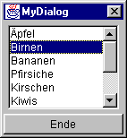

32.10 List
Eine List
ist eine listenartige Darstellung von Werten, aus denen der Anwender
einen oder mehrere auswählen kann. Anders als ein Choice-Element
ist ein Element der Klasse List
ständig in voller Größe auf dem Bildschirm sichtbar.
Unter Windows werden Objekte der Klasse List
durch Listboxen dargestellt.
public List()
public List(int size)
public List(int size, boolean multiselect)
|
java.awt.List |
Der parameterlose Konstruktor legt eine leere Listbox an, deren dargestellte
Größe vom Layoutmanager begrenzt wird. Der Parameter size
legt die Anzahl der angezeigten Zeilen fest. Dabei können auch
mehr Elemente in der Listbox enthalten sein, als auf einmal angezeigt
werden können. List-Dialogelemente
können wahlweise die Mehrfachselektion
von Elementen zulassen. Wird bei der Konstruktion der Listbox der
Parameter multiselect auf true
gesetzt, kann der Anwender nicht nur ein Element, sondern auch mehrere
Elemente selektieren.
Das Dialogelement List
bietet nahezu dieselbe Funktionalität wie Choice.
Zusätzlich stehen die Methoden getSelectedIndexes
und getSelectedItems
zur Verfügung, um bei einer Mehrfachselektion auf die selektierten
Elemente zugreifen zu können:
public int[] getSelectedIndexes()
public String[] getSelectedItems()
|
java.awt.List |
getSelectedIndexes
liefert ein Array mit den Indexpositionen aller selektierten Elemente
und getSelectedItems
liefert eine Liste der Werte selbst.
Mit den Methoden select
und deselect
lassen sich einzelne Elemente selektieren oder deselektieren:
public void select(int index)
public void deselect(int index)
|
java.awt.List |
Im Gegensatz zu Choice
ist es bei einer Komponente des Typs List
auch möglich, Elemente zu entfernen oder ihren Wert zu ändern:
public void remove(int index)
public void replaceItem(String newValue, int index)
|
java.awt.List |
Die Methode remove
löscht das Element an der Position index
und replaceItem
ersetzt das Element an der Position index
durch den neuen Wert newValue.
Eine List
sendet sowohl Item-Ereignisse als auch Action-Ereignisse. Ein Action-Ereignis
wird dann generiert, wenn ein Listenelement per Doppelklick ausgewählt
oder die [ENTER]-Taste gedrückt
wurde. Ein Item-Ereignis wird ausgelöst, nachdem in der Liste
ein Element ausgewählt wurde. Bezüglich der Implementierung
von Event-Handlern für diese Ereignisse verweisen wir auf die
Beschreibungen der Klassen Choice
und TextField
weiter oben.
001 /* List2.inc */
002
003 public void itemStateChanged(ItemEvent event)
004 {
005 List list = (List) event.getItemSelectable();
006 String str1 = list.getSelectedItem();
007 int pos = ((Integer) event.getItem()).intValue();
008 System.out.println("list.getSelectedItem: " + str1);
009 System.out.println("event.getItem: " + pos);
010 }
011
012 public void actionPerformed(ActionEvent event)
013 {
014 Object obj = event.getSource();
015 if (obj instanceof List) {
016 System.out.println("ListAction: "+event.getActionCommand());
017 } else if (obj instanceof Button) {
018 if (event.getActionCommand().equals("Ende")) {
019 endDialog();
020 }
021 }
022 }
|
List2.inc |
Listing 32.13: Behandlung der Ereignisse einer List-Komponente
Das Beispielprogramm für die Verwendung der List-Komponente
sieht so aus:
001 /* List1.inc */
002
003 private void customizeLayout(Panel panel)
004 {
005 panel.setLayout(new FlowLayout(FlowLayout.LEFT));
006 List list = new List(6,false);
007 list.addActionListener(this);
008 list.addItemListener(this);
009 list.add("Äpfel");
010 list.add("Birnen");
011 list.add("Bananen");
012 list.add("Pfirsiche");
013 list.add("Kirschen");
014 list.add("Kiwis");
015 list.add("Ananas");
016 list.add("Erdbeeren");
017 list.add("Blaubeeren");
018 list.add("Mandarinen");
019 panel.add(list);
020 list.select(1);
021 }
|
List1.inc |
Listing 32.14: Verwendung einer List-Komponente

Abbildung 32.9: Ein Dialog mit einer Listbox